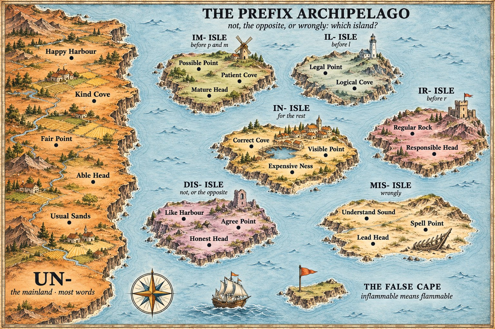
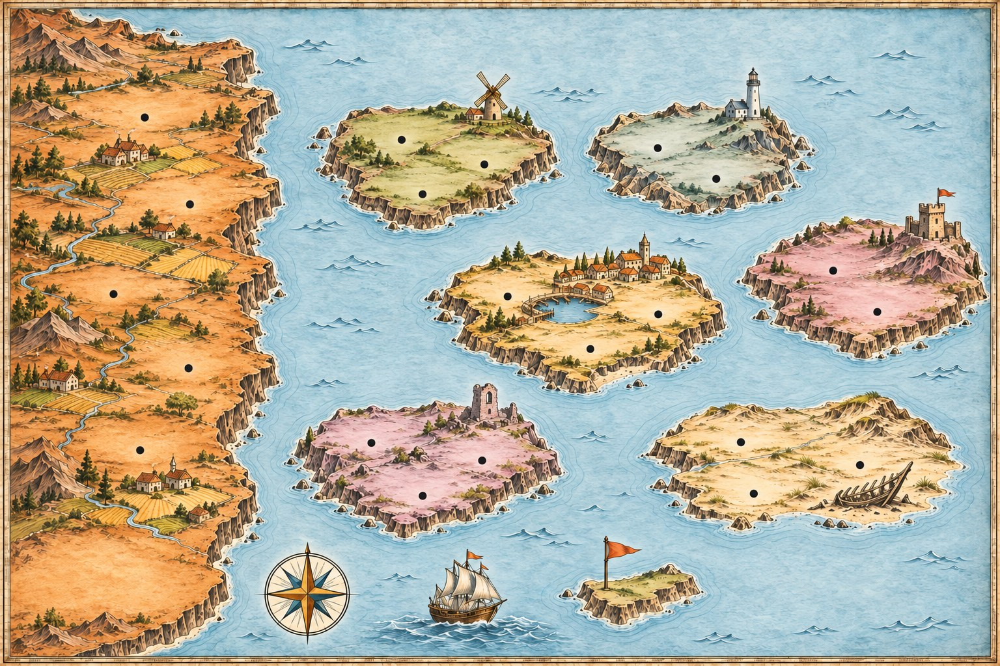

The Prefix Archipelago
To say not in front of a word, English has one big mainland and six islands. Most everyday words sail to the mainland and take un-. The rest live on islands, and each island has its own rule: one for words starting with p and m, one for l, one for r, one for the opposite, one for wrongly. Learn which island a word belongs to, and its spelling follows.
Read the chart
Which prefix makes the opposite?
A prefix never changes the word it sits on: you add it whole, even when that doubles a letter (un + necessary = unnecessary, mis + spell = misspell). What changes is which prefix the word takes.
UN- means not
The mainland, and the safest guess for an everyday adjective: unhappy, unkind, unusual, unfair, unable.
UN- also reverses an action
With verbs, un- undoes what was done: unlock, unpack, untie, undo.
IN- for the Latin words
Many longer words from Latin take in-: incorrect, invisible, inexpensive, informal, incomplete.
IN- bends before p, m, l, r
im- before p and m (impossible, immature), il- before l (illegal), ir- before r (irregular).
DIS- means not, or the opposite
With feelings, actions and qualities: dislike, disagree, dishonest, disappear, disconnect.
MIS- means wrongly
Not the opposite, but done badly: misunderstand, misspell, mislead, misplace.
Island by island
The rule each island keeps, and words that live there. The im-, il- and ir- rules are strong habits, with a few exceptions on the mainland (unpopular, unlucky, unreal).
| Where | Rule | Words |
|---|---|---|
| UN- (mainland) | most everyday words; reverses verbs | unhappy, unkind, unusual, unlock, untie |
| IM- Isle | before p and m | impossible, impatient, impolite, immature, immoral |
| IL- Isle | before l | illegal, illogical, illiterate |
| IR- Isle | before r | irregular, irresponsible, irrelevant |
| IN- Isle | other Latin words | incorrect, invisible, inexpensive, informal |
| DIS- Isle | not, or the opposite | dislike, disagree, dishonest, disappear |
| MIS- Isle | wrongly | misunderstand, misspell, mislead, misplace |
When a word can take two prefixes
A few words can land on two islands, and the meaning changes with the island. Most learners only need the first column; the second is where B2 and C1 writing gains precision.
Same word, two prefixes
Read across: the prefix carries the difference.
| Word | One island | The other |
|---|---|---|
| satisfied | dissatisfied: not pleased with something | unsatisfied: not yet met (an unsatisfied need) |
| organised | disorganised: messy, badly run | unorganised: not organised yet |
| informed | misinformed: told the wrong thing | uninformed: not told anything |
| interested | disinterested: neutral, with nothing to gain | uninterested: bored |
I'm dissatisfied with the service: the staff were disorganised.
Read the chart
Click an island and its line lights up below. Switch the chart to just the words to see them bare, then to with their prefix to see each one sail home. Notice how every word on IM- Isle starts with p or m.

Drag the chart sideways to reach the islands.
The mainland · UN-
IN- and its spellings
DIS- and MIS-
The False Cape: prefixes that are not what they seem
These look as if a prefix turns them negative. It does not.
| Word | Looks like | Really means |
|---|---|---|
| inflammable | cannot burn | burns easily: the same as flammable |
| invaluable | worth nothing | extremely valuable |
| infamous | not famous | famous for something bad |
| unravel | the opposite of ravel | come apart; ravel means nearly the same |
On a warning sign, inflammable and flammable mean the same thing. The safe opposite is non-flammable.
Signal words
Sail to the mainland — UN-
- everyday adjectives: happy, kind, fair, usual
- -ed and -ing forms: unexpected, unconvincing
- -able words from English verbs: unbreakable, unbelievable
- reversing an action: unlock, unpack
- a word you are unsure about: it is the commonest prefix
- even before p, l, r: unpopular, unlucky, unreal
Sail to the islands
- longer Latin words: in-
- starting with p or m: im-
- starting with l: il-
- starting with r: ir-
- the opposite of a feeling or action: dis-
- done wrongly: mis-
If you are not sure, un- is the best bet. The islands are smaller, and their words are mostly longer and more formal.